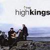

Celtic Lyrics Corner > Shows > The High Kings > The Black Velvet Band
|  | The Black Velvet Band |
| Credits : | Traditional |
| Appears On : | The High Kings (soundtrack) |
| Language : | English |
Lyrics :
In a neat little town they call Belfast
Apprenticed to trade I was bound
Oh many an hour's sweet happiness
Have I spent in that neat little town
But a sad misfortune came over me
Which caused me to stray from the land
Far away from my friends and relations
Betrayed by the black velvet band
Chorus (after each verse)
:
Her eyes, they shone like diamonds
I thought her the queen of the land
And her hair, it hung over her shoulder
Tied up with a black velvet band
I took a stroll down Broadway
Oh meaning not long for to stay
When who should I meet but this pretty fair maid
Come a-traipsing along the highway
She was both fair and handsome
Her neck, it was just like a swan's
And her hair, it hung over her shoulder
Tied up with a black velvet band
(Chorus)
So I took a stroll with this pretty fair maid
And a gentleman, passing us by
Oh I knew that she meant the undoing of him
By the look in her roguish black eye
A gold watch she took from his pocket
And slipped it right into my hand
And the very first thing that I said was
"Bad cess to the black velvet band"
(Chorus)
Seven long years' penal servitude
I spent down in Van Dieman's Land
Far away from my friends and relations
Betrayed by the black velvet band
(Chorus 2x)